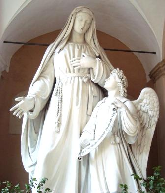

PREÂMBULO

Pouco mais de cinco séculos e meio nos separam daquele longínquo dia 9 de Março de 1440 quando nas primeiras horas da manhã, na grande casa dos Ponziani em Trastevere, recitando o Oficio da VIRGEM MARIA, de cujo culto era muito devota, Francesca Bussa de Ponziani oblata da Congregação Beneditina de Monte Oliveto, encerrava com 56 anos de idade, a sua intensa jornada terrena.
Adoeceu sete dias antes com uma forte febre e teve o privilégio de receber a última visão reconfortante de NOSSO SENHOR JESUS CRISTO, que, acompanhado por Coros de Anjos e Santos, lhe disse antecipando o exato presságio da hora e do momento da sua morte, e lhe deu a certeza da felicidade que a aguardava na eternidade.
O pequeno grupo de devotos que com o filho Giovanni Battista e a nora Mabilia de Papazurri assistia a bem-aventurada, enquanto corajosamente encerrava a própria vida, teria nos anos mais tarde um papel importante na promoção do culto e no recolhimento de provas sobre a santidade de Francisca. Eles foram chamados a depor nos três processos de canonização, que ocorreram dentro de um curto espaço de tempo nos anos, 1440, 1443, 1451.
Entre os presentes, estava o Padre Giovanni Mattiotti, que era reitor de uma Capela próxima a Basílica de Santa Maria em Trastevere e foi o último Confessor de Francisca. Ele escreveu a partir do ano 1447 uma ampla história da vida e dos milagres da Santa, as suas visões, as cruéis lutas suportadas contra o demônio e as viagens em êxtase, conduzida pelo Arcanjo Rafael ao inferno e ao Purgatório, assim como a visita ao Céu acompanhada por São Paulo Apóstolo. Relatou as revelações surpreendentes e admiráveis, descrevendo de maneira real e esclarecedora, a realidade que encontraremos após a morte. Padre Giovanni Mattiotti, seu segundo confessor, que substituiu o Padre Antonio de Monte Savello falecido em 1426, ouviu no confessionário as extraordinárias e impressionantes descrições das visões e as conservou guardas, com suas respectivas datas. No leito de morte, Francisca autorizou ao Padre divulgar todas aquelas anotações que servissem para utilidade e bem da humanidade. São fatos extraordinários que causam admiração e espanto, sobretudo, que coloca as pessoas diante dos acontecimentos misteriosos da existência, em que a realidade do futuro próximo é descortinado em linhas indeléveis e impressionantes.
O eixo da vida espiritual de Francisca é a união com CRISTO na Eucaristia, e este sacramento é para a abençoada um acesso privilegiado aos mistérios da fé. Justamente por esse motivo, o lugar privilegiado dos êxtases de Francisca, é a Igreja, a Capela do Anjo na Basílica de Santa Maria em Trastevere, onde ela gostava de permanecer rezando.
Muitos milagres feitos por NOSSO SENHOR JESUS CRISTO através da intercessão piedosa e repleta de amor de Francisca, assim como diversos combates terríveis que ela enfrentou com o demônio, foram respectivamente pintados em 26 telas formando quadros e também um imenso painel com 10 quadros, atribuídos a Escola do Pintor Antoniazzo Romano, que se encontram no Mosteiro relembrando todos aqueles acontecimentos. Imagens destes quadros, terão oportunidade de apreciar no interior deste Site.
No momento da morte da Santa não estava presente outro filho espiritual predileto da bem-aventurada, o monge olivetano Frei Ippolito da Roma, que naquela época estava como prior do Mosteiro de Santa Maria do Monte Oliveto em Nápoles. Entretanto, alguns anos mais tarde, também ele, juntando a vasta informação que possuía sobre Francisca, escreveu uma biografia densa e concisa, para dar a conhecer a santidade e as virtudes da piedosa senhora Ponziani.
Para se ter um vislumbre da admirável personalidade de Santa Francisca Romana, é construtivo acompanhar as atuais palavras do Cardeal Ângelo Sodano, na homilia da Santa Missa celebrada na Basílica de Santa Maria Nova, em Roma, na festa anual em homenagem a Santa:
“Lendo a sua vida, parece que nos deparamos com uma daquelas mulheres fortes, das quais os Livros Sagrados e as páginas da história da Igreja estão repletos. Exemplo de mulher decidida e corajosa, primeiro na vida familiar e depois na monástica. Modelo de mulher generosa, totalmente dedicada às obras de caridade, numa Roma que no início de 1400, estava provada por guerras, carestias, fome e uma terrível epidemia de peste que dizimava a população”.
De fato, Francisca Ponziani foi uma mulher notável, com um completo autodomínio sobre a sua vontade, aliada a uma disposição invulgar, nascida de uma força interior que a conduzia a exercitar um apostolado intenso e incansável em benefício dos pobres e necessitados. Revestida por incontáveis dons da graça Divina, socorria aos doentes e desamparados, assistindo-os com sua ajuda e se empenhando a encaminhar todos aqueles que haviam perdido o rumo certo da existência, a fim de que retornassem a verdadeira estrada da vida. E junto com este imenso e fervoroso apostolado, se impunha a si mesmo, as mais severas mortificações, como maneira corajosa de santificação e, sobretudo, como forma eficiente de consolar o Coração Divino, por causa dos terríveis pecados da humanidade.
Santa Francisca Romana demonstrou em vida, que a santidade pode ser alcançada em qualquer lugar, no lar, no trabalho, no convívio familiar, e não só nos Conventos, nos Mosteiros e nos ambientes estritamente fechados.
Também exercitou de maneira piedosa em favor das pessoas, os dons e as virtudes que DEUS onipotente ornou sua existência, inclusive dons especialíssimos, como aquele do espírito da profecia e do discernimento, através dos quais, tinha o privilégio de prever o futuro e os acontecimentos no cotidiano.
É bem verdade, que este exclusivo carisma profético exercido por uma mulher, leiga e fundamentalmente inculta, não era um fato sem precedentes na vida da Igreja. No século anterior, mesmo em Roma trabalharam duas grandes místicas, Santa Catarina de Sena e Santa Brígida da Suécia, que estavam ardentemente empenhadas no afã de convencer o Papa a voltar a Roma. O Pontífice e toda a administração da Igreja estavam em Avignon, na França, de certa forma num exílio político, e urgia a necessidade de retornar a Roma, onde sempre foi à sede Papal, a Cátedra de São Pedro. Isto, não só para evitar qualquer forma de subjugação da Igreja ao poder político e temporal, mas primordialmente para unir os cristãos, cultivar a necessária harmonia no clero e realizar as reformas necessárias ao Cristianismo. Nesse sentido, podemos dizer que se Santa Catarina e Santa Brígida foram às profetisas e batalhadoras da Igreja para o retorno do Papa a Roma, da mesma forma, Santa Francisca Romana foi à profetisa dos acontecimentos eclesiásticos no Concílio de Basiléia, na Suíça. Iluminada pela Luz de DEUS aconselhou e indicou os caminhos ao Sumo Pontífice, para contornar as divergências com o clero e promover a paz e a harmonia na Sé Católica e em toda Cristandade.
O livro do Padre Mattiotti com todas as revelações foi escrito em vulgar romano, e logo nos anos seguintes, foi traduzido para o Latim. Em 1995 a Dra. Alessandra Bartolomei Romagnoli, professora catedrática da Universidade de Roma escreveu em Italiano a admirável Vida de “SANTA FRANCESCA ROMANA” com 1.040 páginas, contendo em latim a edição critica do Tratado Latino do Padre Giovanni Mattiotti, editado pela “Libreria Editrice Vaticana”. Todas as informações contidas neste Site foram extraídas do mencionado livro.